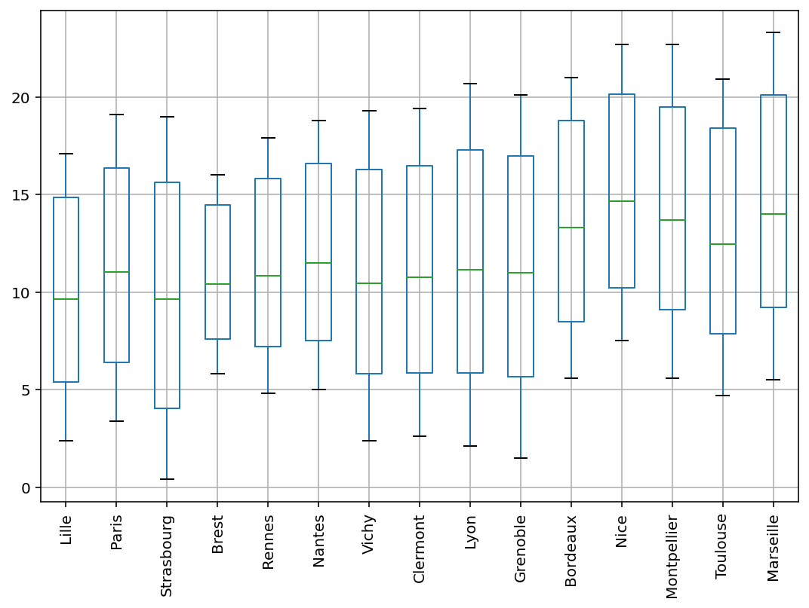

Pandas Dataframes¶
%matplotlib inline
%config InlineBackend.figure_format = 'retina'
import pandas as pd
import numpy as np
import matplotlib.pyplot as plt
pd.set_option("display.max_rows", 8)
plt.rcParams['figure.figsize'] = (9, 6)
Create a DataFrame¶
dates = pd.date_range('20130101', periods=6)
pd.DataFrame(np.random.randn(6,4), index=dates, columns=list('ABCD'))
| A | B | C | D | |
|---|---|---|---|---|
| 2013-01-01 | 0.239748 | -0.751783 | 0.588516 | -2.268939 |
| 2013-01-02 | -1.169012 | 0.568388 | 0.724498 | 0.184829 |
| 2013-01-03 | -0.423245 | 0.279534 | -0.433192 | -0.014009 |
| 2013-01-04 | 0.125446 | 0.142100 | 0.753204 | -0.149811 |
| 2013-01-05 | -0.289244 | -2.125973 | 1.099751 | 1.044548 |
| 2013-01-06 | -1.255107 | -1.221741 | 0.359493 | 0.029926 |
pd.DataFrame({'A' : 1.,
'B' : pd.Timestamp('20130102'),
'C' : pd.Series(1,index=list(range(4)),dtype='float32'),
'D' : np.arange(4,dtype='int32'),
'E' : pd.Categorical(["test","train","test","train"]),
'F' : 'foo' })
| A | B | C | D | E | F | |
|---|---|---|---|---|---|---|
| 0 | 1.0 | 2013-01-02 | 1.0 | 0 | test | foo |
| 1 | 1.0 | 2013-01-02 | 1.0 | 1 | train | foo |
| 2 | 1.0 | 2013-01-02 | 1.0 | 2 | test | foo |
| 3 | 1.0 | 2013-01-02 | 1.0 | 3 | train | foo |
Load Data from CSV File¶
url = "https://www.fun-mooc.fr/c4x/agrocampusouest/40001S03/asset/AnaDo_JeuDonnees_TemperatFrance.csv"
french_cities = pd.read_csv(url, delimiter=";", encoding="latin1", index_col=0)
french_cities
| Janv | Févr | Mars | Avri | Mai | Juin | juil | Août | Sept | Octo | Nove | Déce | Lati | Long | Moye | Ampl | Région | |
|---|---|---|---|---|---|---|---|---|---|---|---|---|---|---|---|---|---|
| Bordeaux | 5.6 | 6.6 | 10.3 | 12.8 | 15.8 | 19.3 | 20.9 | 21.0 | 18.6 | 13.8 | 9.1 | 6.2 | 44.50 | -0.34 | 13.33 | 15.4 | SO |
| Brest | 6.1 | 5.8 | 7.8 | 9.2 | 11.6 | 14.4 | 15.6 | 16.0 | 14.7 | 12.0 | 9.0 | 7.0 | 48.24 | -4.29 | 10.77 | 10.2 | NO |
| Clermont | 2.6 | 3.7 | 7.5 | 10.3 | 13.8 | 17.3 | 19.4 | 19.1 | 16.2 | 11.2 | 6.6 | 3.6 | 45.47 | 3.05 | 10.94 | 16.8 | SE |
| Grenoble | 1.5 | 3.2 | 7.7 | 10.6 | 14.5 | 17.8 | 20.1 | 19.5 | 16.7 | 11.4 | 6.5 | 2.3 | 45.10 | 5.43 | 10.98 | 18.6 | SE |
| ... | ... | ... | ... | ... | ... | ... | ... | ... | ... | ... | ... | ... | ... | ... | ... | ... | ... |
| Rennes | 4.8 | 5.3 | 7.9 | 10.1 | 13.1 | 16.2 | 17.9 | 17.8 | 15.7 | 11.6 | 7.8 | 5.4 | 48.05 | -1.41 | 11.13 | 13.1 | NO |
| Strasbourg | 0.4 | 1.5 | 5.6 | 9.8 | 14.0 | 17.2 | 19.0 | 18.3 | 15.1 | 9.5 | 4.9 | 1.3 | 48.35 | 7.45 | 9.72 | 18.6 | NE |
| Toulouse | 4.7 | 5.6 | 9.2 | 11.6 | 14.9 | 18.7 | 20.9 | 20.9 | 18.3 | 13.3 | 8.6 | 5.5 | 43.36 | 1.26 | 12.68 | 16.2 | SO |
| Vichy | 2.4 | 3.4 | 7.1 | 9.9 | 13.6 | 17.1 | 19.3 | 18.8 | 16.0 | 11.0 | 6.6 | 3.4 | 46.08 | 3.26 | 10.72 | 16.9 | SE |
15 rows × 17 columns
Viewing Data¶
french_cities.head()
| Janv | Févr | Mars | Avri | Mai | Juin | juil | Août | Sept | Octo | Nove | Déce | Lati | Long | Moye | Ampl | Région | |
|---|---|---|---|---|---|---|---|---|---|---|---|---|---|---|---|---|---|
| Bordeaux | 5.6 | 6.6 | 10.3 | 12.8 | 15.8 | 19.3 | 20.9 | 21.0 | 18.6 | 13.8 | 9.1 | 6.2 | 44.50 | -0.34 | 13.33 | 15.4 | SO |
| Brest | 6.1 | 5.8 | 7.8 | 9.2 | 11.6 | 14.4 | 15.6 | 16.0 | 14.7 | 12.0 | 9.0 | 7.0 | 48.24 | -4.29 | 10.77 | 10.2 | NO |
| Clermont | 2.6 | 3.7 | 7.5 | 10.3 | 13.8 | 17.3 | 19.4 | 19.1 | 16.2 | 11.2 | 6.6 | 3.6 | 45.47 | 3.05 | 10.94 | 16.8 | SE |
| Grenoble | 1.5 | 3.2 | 7.7 | 10.6 | 14.5 | 17.8 | 20.1 | 19.5 | 16.7 | 11.4 | 6.5 | 2.3 | 45.10 | 5.43 | 10.98 | 18.6 | SE |
| Lille | 2.4 | 2.9 | 6.0 | 8.9 | 12.4 | 15.3 | 17.1 | 17.1 | 14.7 | 10.4 | 6.1 | 3.5 | 50.38 | 3.04 | 9.73 | 14.7 | NE |
french_cities.tail()
| Janv | Févr | Mars | Avri | Mai | Juin | juil | Août | Sept | Octo | Nove | Déce | Lati | Long | Moye | Ampl | Région | |
|---|---|---|---|---|---|---|---|---|---|---|---|---|---|---|---|---|---|
| Paris | 3.4 | 4.1 | 7.6 | 10.7 | 14.3 | 17.5 | 19.1 | 18.7 | 16.0 | 11.4 | 7.1 | 4.3 | 48.52 | 2.20 | 11.18 | 15.7 | NE |
| Rennes | 4.8 | 5.3 | 7.9 | 10.1 | 13.1 | 16.2 | 17.9 | 17.8 | 15.7 | 11.6 | 7.8 | 5.4 | 48.05 | -1.41 | 11.13 | 13.1 | NO |
| Strasbourg | 0.4 | 1.5 | 5.6 | 9.8 | 14.0 | 17.2 | 19.0 | 18.3 | 15.1 | 9.5 | 4.9 | 1.3 | 48.35 | 7.45 | 9.72 | 18.6 | NE |
| Toulouse | 4.7 | 5.6 | 9.2 | 11.6 | 14.9 | 18.7 | 20.9 | 20.9 | 18.3 | 13.3 | 8.6 | 5.5 | 43.36 | 1.26 | 12.68 | 16.2 | SO |
| Vichy | 2.4 | 3.4 | 7.1 | 9.9 | 13.6 | 17.1 | 19.3 | 18.8 | 16.0 | 11.0 | 6.6 | 3.4 | 46.08 | 3.26 | 10.72 | 16.9 | SE |
Index¶
french_cities.index
Index(['Bordeaux', 'Brest', 'Clermont', 'Grenoble', 'Lille', 'Lyon',
'Marseille', 'Montpellier', 'Nantes', 'Nice', 'Paris', 'Rennes',
'Strasbourg', 'Toulouse', 'Vichy'],
dtype='object')
We can rename an index by setting its name.
french_cities.index.name = "City"
french_cities.head()
| Janv | Févr | Mars | Avri | Mai | Juin | juil | Août | Sept | Octo | Nove | Déce | Lati | Long | Moye | Ampl | Région | |
|---|---|---|---|---|---|---|---|---|---|---|---|---|---|---|---|---|---|
| City | |||||||||||||||||
| Bordeaux | 5.6 | 6.6 | 10.3 | 12.8 | 15.8 | 19.3 | 20.9 | 21.0 | 18.6 | 13.8 | 9.1 | 6.2 | 44.50 | -0.34 | 13.33 | 15.4 | SO |
| Brest | 6.1 | 5.8 | 7.8 | 9.2 | 11.6 | 14.4 | 15.6 | 16.0 | 14.7 | 12.0 | 9.0 | 7.0 | 48.24 | -4.29 | 10.77 | 10.2 | NO |
| Clermont | 2.6 | 3.7 | 7.5 | 10.3 | 13.8 | 17.3 | 19.4 | 19.1 | 16.2 | 11.2 | 6.6 | 3.6 | 45.47 | 3.05 | 10.94 | 16.8 | SE |
| Grenoble | 1.5 | 3.2 | 7.7 | 10.6 | 14.5 | 17.8 | 20.1 | 19.5 | 16.7 | 11.4 | 6.5 | 2.3 | 45.10 | 5.43 | 10.98 | 18.6 | SE |
| Lille | 2.4 | 2.9 | 6.0 | 8.9 | 12.4 | 15.3 | 17.1 | 17.1 | 14.7 | 10.4 | 6.1 | 3.5 | 50.38 | 3.04 | 9.73 | 14.7 | NE |
Exercise: Rename DataFrame Months in English¶
import locale
import calendar
locale.setlocale(locale.LC_ALL,'en_US')
months = calendar.month_abbr
print(*months)
---------------------------------------------------------------------------
Error Traceback (most recent call last)
<ipython-input-9-e38d847f0b53> in <module>
2 import calendar
3
----> 4 locale.setlocale(locale.LC_ALL,'en_US')
5
6 months = calendar.month_abbr
/usr/share/miniconda3/envs/big-data/lib/python3.8/locale.py in setlocale(category, locale)
606 # convert to string
607 locale = normalize(_build_localename(locale))
--> 608 return _setlocale(category, locale)
609
610 def resetlocale(category=LC_ALL):
Error: unsupported locale setting
french_cities.rename(
columns={ old : new
for old, new in zip(french_cities.columns[:12], months[1:])
if old != new },
inplace=True)
french_cities.columns
Index(['Jan', 'Feb', 'Mar', 'Apr', 'May', 'Jun', 'Jul', 'Aug', 'Sep', 'Oct',
'Nov', 'Dec', 'Lati', 'Long', 'Moye', 'Ampl', 'Région'],
dtype='object')
french_cities.rename(columns={'Moye':'Mean'}, inplace=True)
french_cities
| Jan | Feb | Mar | Apr | May | Jun | Jul | Aug | Sep | Oct | Nov | Dec | Lati | Long | Mean | Ampl | Région | |
|---|---|---|---|---|---|---|---|---|---|---|---|---|---|---|---|---|---|
| City | |||||||||||||||||
| Bordeaux | 5.6 | 6.6 | 10.3 | 12.8 | 15.8 | 19.3 | 20.9 | 21.0 | 18.6 | 13.8 | 9.1 | 6.2 | 44.50 | -0.34 | 13.33 | 15.4 | SO |
| Brest | 6.1 | 5.8 | 7.8 | 9.2 | 11.6 | 14.4 | 15.6 | 16.0 | 14.7 | 12.0 | 9.0 | 7.0 | 48.24 | -4.29 | 10.77 | 10.2 | NO |
| Clermont | 2.6 | 3.7 | 7.5 | 10.3 | 13.8 | 17.3 | 19.4 | 19.1 | 16.2 | 11.2 | 6.6 | 3.6 | 45.47 | 3.05 | 10.94 | 16.8 | SE |
| Grenoble | 1.5 | 3.2 | 7.7 | 10.6 | 14.5 | 17.8 | 20.1 | 19.5 | 16.7 | 11.4 | 6.5 | 2.3 | 45.10 | 5.43 | 10.98 | 18.6 | SE |
| ... | ... | ... | ... | ... | ... | ... | ... | ... | ... | ... | ... | ... | ... | ... | ... | ... | ... |
| Rennes | 4.8 | 5.3 | 7.9 | 10.1 | 13.1 | 16.2 | 17.9 | 17.8 | 15.7 | 11.6 | 7.8 | 5.4 | 48.05 | -1.41 | 11.13 | 13.1 | NO |
| Strasbourg | 0.4 | 1.5 | 5.6 | 9.8 | 14.0 | 17.2 | 19.0 | 18.3 | 15.1 | 9.5 | 4.9 | 1.3 | 48.35 | 7.45 | 9.72 | 18.6 | NE |
| Toulouse | 4.7 | 5.6 | 9.2 | 11.6 | 14.9 | 18.7 | 20.9 | 20.9 | 18.3 | 13.3 | 8.6 | 5.5 | 43.36 | 1.26 | 12.68 | 16.2 | SO |
| Vichy | 2.4 | 3.4 | 7.1 | 9.9 | 13.6 | 17.1 | 19.3 | 18.8 | 16.0 | 11.0 | 6.6 | 3.4 | 46.08 | 3.26 | 10.72 | 16.9 | SE |
15 rows × 17 columns
From a local or remote HTML file¶
We can download and extract data about mean sea level stations around the world from the PSMSL website.
# Needs `lxml`, `beautifulSoup4` and `html5lib` python packages
table_list = pd.read_html("http://www.psmsl.org/data/obtaining/")
# there is 1 table on that page which contains metadata about the stations where
# sea levels are recorded
local_sea_level_stations = table_list[0]
local_sea_level_stations
| Station Name | ID | Lat. | Lon. | GLOSS ID | Country | Date | Coastline | Station | |
|---|---|---|---|---|---|---|---|---|---|
| 0 | BREST | 1 | 48.383 | -4.495 | 242.0 | FRA | 07/08/2019 | 190 | 91 |
| 1 | SWINOUJSCIE | 2 | 53.917 | 14.233 | NaN | POL | 19/10/2001 | 110 | 92 |
| 2 | SHEERNESS | 3 | 51.446 | 0.743 | NaN | GBR | 06/06/2019 | 170 | 101 |
| 3 | HOLYHEAD | 5 | 53.314 | -4.620 | NaN | GBR | 06/06/2019 | 170 | 191 |
| ... | ... | ... | ... | ... | ... | ... | ... | ... | ... |
| 1544 | SUVA-B | 2356 | -18.133 | 178.428 | NaN | FJI | 28/01/2020 | 742 | 14 |
| 1545 | SYDNEY PORT JACKSON | 2358 | -33.826 | 151.259 | NaN | AUS | 13/06/2019 | 680 | 138 |
| 1546 | ARKO | 2359 | 58.484 | 16.961 | NaN | SWE | 12/09/2019 | 50 | 112 |
| 1547 | UDDEVALLA | 2360 | 58.348 | 11.895 | NaN | SWE | 12/09/2019 | 50 | 22 |
1548 rows × 9 columns
Indexing on DataFrames¶
french_cities['Lati'] # DF [] accesses columns (Series)
City
Bordeaux 44.50
Brest 48.24
Clermont 45.47
Grenoble 45.10
...
Rennes 48.05
Strasbourg 48.35
Toulouse 43.36
Vichy 46.08
Name: Lati, Length: 15, dtype: float64
.loc and .iloc allow to access individual values, slices or masked selections:
french_cities.loc['Rennes', "Sep"]
15.7
french_cities.loc['Rennes', ["Sep", "Dec"]]
Sep 15.7
Dec 5.4
Name: Rennes, dtype: object
french_cities.loc['Rennes', "Sep":"Dec"]
Sep 15.7
Oct 11.6
Nov 7.8
Dec 5.4
Name: Rennes, dtype: object
Masking¶
mask = [True, False] * 6 + 5 * [False]
print(french_cities.iloc[:, mask])
Jan Mar May Jul Sep Nov
City
Bordeaux 5.6 10.3 15.8 20.9 18.6 9.1
Brest 6.1 7.8 11.6 15.6 14.7 9.0
Clermont 2.6 7.5 13.8 19.4 16.2 6.6
Grenoble 1.5 7.7 14.5 20.1 16.7 6.5
... ... ... ... ... ... ...
Rennes 4.8 7.9 13.1 17.9 15.7 7.8
Strasbourg 0.4 5.6 14.0 19.0 15.1 4.9
Toulouse 4.7 9.2 14.9 20.9 18.3 8.6
Vichy 2.4 7.1 13.6 19.3 16.0 6.6
[15 rows x 6 columns]
print(french_cities.loc["Rennes", mask])
Jan 4.8
Mar 7.9
May 13.1
Jul 17.9
Sep 15.7
Nov 7.8
Name: Rennes, dtype: object
New column¶
french_cities["std"] = french_cities.iloc[:,:12].std(axis=1)
french_cities
| Jan | Feb | Mar | Apr | May | Jun | Jul | Aug | Sep | Oct | Nov | Dec | Lati | Long | Mean | Ampl | Région | std | |
|---|---|---|---|---|---|---|---|---|---|---|---|---|---|---|---|---|---|---|
| City | ||||||||||||||||||
| Bordeaux | 5.6 | 6.6 | 10.3 | 12.8 | 15.8 | 19.3 | 20.9 | 21.0 | 18.6 | 13.8 | 9.1 | 6.2 | 44.50 | -0.34 | 13.33 | 15.4 | SO | 5.792681 |
| Brest | 6.1 | 5.8 | 7.8 | 9.2 | 11.6 | 14.4 | 15.6 | 16.0 | 14.7 | 12.0 | 9.0 | 7.0 | 48.24 | -4.29 | 10.77 | 10.2 | NO | 3.773673 |
| Clermont | 2.6 | 3.7 | 7.5 | 10.3 | 13.8 | 17.3 | 19.4 | 19.1 | 16.2 | 11.2 | 6.6 | 3.6 | 45.47 | 3.05 | 10.94 | 16.8 | SE | 6.189795 |
| Grenoble | 1.5 | 3.2 | 7.7 | 10.6 | 14.5 | 17.8 | 20.1 | 19.5 | 16.7 | 11.4 | 6.5 | 2.3 | 45.10 | 5.43 | 10.98 | 18.6 | SE | 6.770771 |
| ... | ... | ... | ... | ... | ... | ... | ... | ... | ... | ... | ... | ... | ... | ... | ... | ... | ... | ... |
| Rennes | 4.8 | 5.3 | 7.9 | 10.1 | 13.1 | 16.2 | 17.9 | 17.8 | 15.7 | 11.6 | 7.8 | 5.4 | 48.05 | -1.41 | 11.13 | 13.1 | NO | 4.958800 |
| Strasbourg | 0.4 | 1.5 | 5.6 | 9.8 | 14.0 | 17.2 | 19.0 | 18.3 | 15.1 | 9.5 | 4.9 | 1.3 | 48.35 | 7.45 | 9.72 | 18.6 | NE | 6.931723 |
| Toulouse | 4.7 | 5.6 | 9.2 | 11.6 | 14.9 | 18.7 | 20.9 | 20.9 | 18.3 | 13.3 | 8.6 | 5.5 | 43.36 | 1.26 | 12.68 | 16.2 | SO | 6.056977 |
| Vichy | 2.4 | 3.4 | 7.1 | 9.9 | 13.6 | 17.1 | 19.3 | 18.8 | 16.0 | 11.0 | 6.6 | 3.4 | 46.08 | 3.26 | 10.72 | 16.9 | SE | 6.201148 |
15 rows × 18 columns
french_cities = french_cities.drop("std", axis=1) # remove this new column
french_cities
| Jan | Feb | Mar | Apr | May | Jun | Jul | Aug | Sep | Oct | Nov | Dec | Lati | Long | Mean | Ampl | Région | |
|---|---|---|---|---|---|---|---|---|---|---|---|---|---|---|---|---|---|
| City | |||||||||||||||||
| Bordeaux | 5.6 | 6.6 | 10.3 | 12.8 | 15.8 | 19.3 | 20.9 | 21.0 | 18.6 | 13.8 | 9.1 | 6.2 | 44.50 | -0.34 | 13.33 | 15.4 | SO |
| Brest | 6.1 | 5.8 | 7.8 | 9.2 | 11.6 | 14.4 | 15.6 | 16.0 | 14.7 | 12.0 | 9.0 | 7.0 | 48.24 | -4.29 | 10.77 | 10.2 | NO |
| Clermont | 2.6 | 3.7 | 7.5 | 10.3 | 13.8 | 17.3 | 19.4 | 19.1 | 16.2 | 11.2 | 6.6 | 3.6 | 45.47 | 3.05 | 10.94 | 16.8 | SE |
| Grenoble | 1.5 | 3.2 | 7.7 | 10.6 | 14.5 | 17.8 | 20.1 | 19.5 | 16.7 | 11.4 | 6.5 | 2.3 | 45.10 | 5.43 | 10.98 | 18.6 | SE |
| ... | ... | ... | ... | ... | ... | ... | ... | ... | ... | ... | ... | ... | ... | ... | ... | ... | ... |
| Rennes | 4.8 | 5.3 | 7.9 | 10.1 | 13.1 | 16.2 | 17.9 | 17.8 | 15.7 | 11.6 | 7.8 | 5.4 | 48.05 | -1.41 | 11.13 | 13.1 | NO |
| Strasbourg | 0.4 | 1.5 | 5.6 | 9.8 | 14.0 | 17.2 | 19.0 | 18.3 | 15.1 | 9.5 | 4.9 | 1.3 | 48.35 | 7.45 | 9.72 | 18.6 | NE |
| Toulouse | 4.7 | 5.6 | 9.2 | 11.6 | 14.9 | 18.7 | 20.9 | 20.9 | 18.3 | 13.3 | 8.6 | 5.5 | 43.36 | 1.26 | 12.68 | 16.2 | SO |
| Vichy | 2.4 | 3.4 | 7.1 | 9.9 | 13.6 | 17.1 | 19.3 | 18.8 | 16.0 | 11.0 | 6.6 | 3.4 | 46.08 | 3.26 | 10.72 | 16.9 | SE |
15 rows × 17 columns
Modifying a dataframe with multiple indexing¶
# french_cities['Rennes']['Sep'] = 25 # It does not works and breaks the DataFrame
french_cities.loc['Rennes']['Sep'] # = 25 is the right way to do it
15.7
french_cities
| Jan | Feb | Mar | Apr | May | Jun | Jul | Aug | Sep | Oct | Nov | Dec | Lati | Long | Mean | Ampl | Région | |
|---|---|---|---|---|---|---|---|---|---|---|---|---|---|---|---|---|---|
| City | |||||||||||||||||
| Bordeaux | 5.6 | 6.6 | 10.3 | 12.8 | 15.8 | 19.3 | 20.9 | 21.0 | 18.6 | 13.8 | 9.1 | 6.2 | 44.50 | -0.34 | 13.33 | 15.4 | SO |
| Brest | 6.1 | 5.8 | 7.8 | 9.2 | 11.6 | 14.4 | 15.6 | 16.0 | 14.7 | 12.0 | 9.0 | 7.0 | 48.24 | -4.29 | 10.77 | 10.2 | NO |
| Clermont | 2.6 | 3.7 | 7.5 | 10.3 | 13.8 | 17.3 | 19.4 | 19.1 | 16.2 | 11.2 | 6.6 | 3.6 | 45.47 | 3.05 | 10.94 | 16.8 | SE |
| Grenoble | 1.5 | 3.2 | 7.7 | 10.6 | 14.5 | 17.8 | 20.1 | 19.5 | 16.7 | 11.4 | 6.5 | 2.3 | 45.10 | 5.43 | 10.98 | 18.6 | SE |
| ... | ... | ... | ... | ... | ... | ... | ... | ... | ... | ... | ... | ... | ... | ... | ... | ... | ... |
| Rennes | 4.8 | 5.3 | 7.9 | 10.1 | 13.1 | 16.2 | 17.9 | 17.8 | 15.7 | 11.6 | 7.8 | 5.4 | 48.05 | -1.41 | 11.13 | 13.1 | NO |
| Strasbourg | 0.4 | 1.5 | 5.6 | 9.8 | 14.0 | 17.2 | 19.0 | 18.3 | 15.1 | 9.5 | 4.9 | 1.3 | 48.35 | 7.45 | 9.72 | 18.6 | NE |
| Toulouse | 4.7 | 5.6 | 9.2 | 11.6 | 14.9 | 18.7 | 20.9 | 20.9 | 18.3 | 13.3 | 8.6 | 5.5 | 43.36 | 1.26 | 12.68 | 16.2 | SO |
| Vichy | 2.4 | 3.4 | 7.1 | 9.9 | 13.6 | 17.1 | 19.3 | 18.8 | 16.0 | 11.0 | 6.6 | 3.4 | 46.08 | 3.26 | 10.72 | 16.9 | SE |
15 rows × 17 columns
Transforming datasets¶
french_cities['Mean'].min(), french_cities['Ampl'].max()
(9.72, 18.6)
Apply¶
Let’s convert the temperature mean from Celsius to Fahrenheit degree.
fahrenheit = lambda T: T*9/5+32
french_cities['Mean'].apply(fahrenheit)
City
Bordeaux 55.994
Brest 51.386
Clermont 51.692
Grenoble 51.764
...
Rennes 52.034
Strasbourg 49.496
Toulouse 54.824
Vichy 51.296
Name: Mean, Length: 15, dtype: float64
Sort¶
french_cities.sort_values(by='Lati')
| Jan | Feb | Mar | Apr | May | Jun | Jul | Aug | Sep | Oct | Nov | Dec | Lati | Long | Mean | Ampl | Région | |
|---|---|---|---|---|---|---|---|---|---|---|---|---|---|---|---|---|---|
| City | |||||||||||||||||
| Marseille | 5.5 | 6.6 | 10.0 | 13.0 | 16.8 | 20.8 | 23.3 | 22.8 | 19.9 | 15.0 | 10.2 | 6.9 | 43.18 | 5.24 | 14.23 | 17.8 | SE |
| Montpellier | 5.6 | 6.7 | 9.9 | 12.8 | 16.2 | 20.1 | 22.7 | 22.3 | 19.3 | 14.6 | 10.0 | 6.5 | 43.36 | 3.53 | 13.89 | 17.1 | SE |
| Toulouse | 4.7 | 5.6 | 9.2 | 11.6 | 14.9 | 18.7 | 20.9 | 20.9 | 18.3 | 13.3 | 8.6 | 5.5 | 43.36 | 1.26 | 12.68 | 16.2 | SO |
| Nice | 7.5 | 8.5 | 10.8 | 13.3 | 16.7 | 20.1 | 22.7 | 22.5 | 20.3 | 16.0 | 11.5 | 8.2 | 43.42 | 7.15 | 14.84 | 15.2 | SE |
| ... | ... | ... | ... | ... | ... | ... | ... | ... | ... | ... | ... | ... | ... | ... | ... | ... | ... |
| Brest | 6.1 | 5.8 | 7.8 | 9.2 | 11.6 | 14.4 | 15.6 | 16.0 | 14.7 | 12.0 | 9.0 | 7.0 | 48.24 | -4.29 | 10.77 | 10.2 | NO |
| Strasbourg | 0.4 | 1.5 | 5.6 | 9.8 | 14.0 | 17.2 | 19.0 | 18.3 | 15.1 | 9.5 | 4.9 | 1.3 | 48.35 | 7.45 | 9.72 | 18.6 | NE |
| Paris | 3.4 | 4.1 | 7.6 | 10.7 | 14.3 | 17.5 | 19.1 | 18.7 | 16.0 | 11.4 | 7.1 | 4.3 | 48.52 | 2.20 | 11.18 | 15.7 | NE |
| Lille | 2.4 | 2.9 | 6.0 | 8.9 | 12.4 | 15.3 | 17.1 | 17.1 | 14.7 | 10.4 | 6.1 | 3.5 | 50.38 | 3.04 | 9.73 | 14.7 | NE |
15 rows × 17 columns
french_cities = french_cities.sort_values(by='Lati',ascending=False)
french_cities
| Jan | Feb | Mar | Apr | May | Jun | Jul | Aug | Sep | Oct | Nov | Dec | Lati | Long | Mean | Ampl | Région | |
|---|---|---|---|---|---|---|---|---|---|---|---|---|---|---|---|---|---|
| City | |||||||||||||||||
| Lille | 2.4 | 2.9 | 6.0 | 8.9 | 12.4 | 15.3 | 17.1 | 17.1 | 14.7 | 10.4 | 6.1 | 3.5 | 50.38 | 3.04 | 9.73 | 14.7 | NE |
| Paris | 3.4 | 4.1 | 7.6 | 10.7 | 14.3 | 17.5 | 19.1 | 18.7 | 16.0 | 11.4 | 7.1 | 4.3 | 48.52 | 2.20 | 11.18 | 15.7 | NE |
| Strasbourg | 0.4 | 1.5 | 5.6 | 9.8 | 14.0 | 17.2 | 19.0 | 18.3 | 15.1 | 9.5 | 4.9 | 1.3 | 48.35 | 7.45 | 9.72 | 18.6 | NE |
| Brest | 6.1 | 5.8 | 7.8 | 9.2 | 11.6 | 14.4 | 15.6 | 16.0 | 14.7 | 12.0 | 9.0 | 7.0 | 48.24 | -4.29 | 10.77 | 10.2 | NO |
| ... | ... | ... | ... | ... | ... | ... | ... | ... | ... | ... | ... | ... | ... | ... | ... | ... | ... |
| Nice | 7.5 | 8.5 | 10.8 | 13.3 | 16.7 | 20.1 | 22.7 | 22.5 | 20.3 | 16.0 | 11.5 | 8.2 | 43.42 | 7.15 | 14.84 | 15.2 | SE |
| Montpellier | 5.6 | 6.7 | 9.9 | 12.8 | 16.2 | 20.1 | 22.7 | 22.3 | 19.3 | 14.6 | 10.0 | 6.5 | 43.36 | 3.53 | 13.89 | 17.1 | SE |
| Toulouse | 4.7 | 5.6 | 9.2 | 11.6 | 14.9 | 18.7 | 20.9 | 20.9 | 18.3 | 13.3 | 8.6 | 5.5 | 43.36 | 1.26 | 12.68 | 16.2 | SO |
| Marseille | 5.5 | 6.6 | 10.0 | 13.0 | 16.8 | 20.8 | 23.3 | 22.8 | 19.9 | 15.0 | 10.2 | 6.9 | 43.18 | 5.24 | 14.23 | 17.8 | SE |
15 rows × 17 columns
Stack and unstack¶
Instead of seeing the months along the axis 1, and the cities along the axis 0, let’s try to convert these into an outer and an inner axis along only 1 time dimension.
pd.set_option("display.max_rows", 20)
unstacked = french_cities.iloc[:,:12].unstack()
unstacked
City
Jan Lille 2.4
Paris 3.4
Strasbourg 0.4
Brest 6.1
Rennes 4.8
...
Dec Bordeaux 6.2
Nice 8.2
Montpellier 6.5
Toulouse 5.5
Marseille 6.9
Length: 180, dtype: float64
type(unstacked)
pandas.core.series.Series
Transpose¶
The result is grouped in the wrong order since it sorts first the axis that was unstacked. We need to transpose the dataframe.
city_temp = french_cities.iloc[:,:12].transpose()
city_temp.plot()
/Users/navaro/miniconda3/envs/big-data/lib/python3.8/site-packages/pandas/plotting/_matplotlib/core.py:1235: UserWarning: FixedFormatter should only be used together with FixedLocator
ax.set_xticklabels(xticklabels)
<AxesSubplot:>
city_temp.boxplot(rot=90);

Describing¶
french_cities['Région'].describe()
count 15
unique 4
top SE
freq 7
Name: Région, dtype: object
french_cities['Région'].unique()
array(['NE', 'NO', 'SE', 'SO'], dtype=object)
french_cities['Région'].value_counts()
SE 7
NE 3
NO 3
SO 2
Name: Région, dtype: int64
# To save memory, we can convert it to a categorical column:
french_cities["Région"] = french_cities["Région"].astype("category")
french_cities.memory_usage()
Index 760
Jan 120
Feb 120
Mar 120
Apr 120
May 120
Jun 120
Jul 120
Aug 120
Sep 120
Oct 120
Nov 120
Dec 120
Lati 120
Long 120
Mean 120
Ampl 120
Région 207
dtype: int64
Data Aggregation/summarization¶
groupby¶
fc_grouped_region = french_cities.groupby("Région")
type(fc_grouped_region)
pandas.core.groupby.generic.DataFrameGroupBy
for group_name, subdf in fc_grouped_region:
print(group_name)
print(subdf)
print("")
NE
Jan Feb Mar Apr May Jun Jul Aug Sep Oct Nov Dec \
City
Lille 2.4 2.9 6.0 8.9 12.4 15.3 17.1 17.1 14.7 10.4 6.1 3.5
Paris 3.4 4.1 7.6 10.7 14.3 17.5 19.1 18.7 16.0 11.4 7.1 4.3
Strasbourg 0.4 1.5 5.6 9.8 14.0 17.2 19.0 18.3 15.1 9.5 4.9 1.3
Lati Long Mean Ampl Région
City
Lille 50.38 3.04 9.73 14.7 NE
Paris 48.52 2.20 11.18 15.7 NE
Strasbourg 48.35 7.45 9.72 18.6 NE
NO
Jan Feb Mar Apr May Jun Jul Aug Sep Oct Nov Dec \
City
Brest 6.1 5.8 7.8 9.2 11.6 14.4 15.6 16.0 14.7 12.0 9.0 7.0
Rennes 4.8 5.3 7.9 10.1 13.1 16.2 17.9 17.8 15.7 11.6 7.8 5.4
Nantes 5.0 5.3 8.4 10.8 13.9 17.2 18.8 18.6 16.4 12.2 8.2 5.5
Lati Long Mean Ampl Région
City
Brest 48.24 -4.29 10.77 10.2 NO
Rennes 48.05 -1.41 11.13 13.1 NO
Nantes 47.13 -1.33 11.69 13.8 NO
SE
Jan Feb Mar Apr May Jun Jul Aug Sep Oct Nov \
City
Vichy 2.4 3.4 7.1 9.9 13.6 17.1 19.3 18.8 16.0 11.0 6.6
Clermont 2.6 3.7 7.5 10.3 13.8 17.3 19.4 19.1 16.2 11.2 6.6
Lyon 2.1 3.3 7.7 10.9 14.9 18.5 20.7 20.1 16.9 11.4 6.7
Grenoble 1.5 3.2 7.7 10.6 14.5 17.8 20.1 19.5 16.7 11.4 6.5
Nice 7.5 8.5 10.8 13.3 16.7 20.1 22.7 22.5 20.3 16.0 11.5
Montpellier 5.6 6.7 9.9 12.8 16.2 20.1 22.7 22.3 19.3 14.6 10.0
Marseille 5.5 6.6 10.0 13.0 16.8 20.8 23.3 22.8 19.9 15.0 10.2
Dec Lati Long Mean Ampl Région
City
Vichy 3.4 46.08 3.26 10.72 16.9 SE
Clermont 3.6 45.47 3.05 10.94 16.8 SE
Lyon 3.1 45.45 4.51 11.36 18.6 SE
Grenoble 2.3 45.10 5.43 10.98 18.6 SE
Nice 8.2 43.42 7.15 14.84 15.2 SE
Montpellier 6.5 43.36 3.53 13.89 17.1 SE
Marseille 6.9 43.18 5.24 14.23 17.8 SE
SO
Jan Feb Mar Apr May Jun Jul Aug Sep Oct Nov Dec \
City
Bordeaux 5.6 6.6 10.3 12.8 15.8 19.3 20.9 21.0 18.6 13.8 9.1 6.2
Toulouse 4.7 5.6 9.2 11.6 14.9 18.7 20.9 20.9 18.3 13.3 8.6 5.5
Lati Long Mean Ampl Région
City
Bordeaux 44.50 -0.34 13.33 15.4 SO
Toulouse 43.36 1.26 12.68 16.2 SO